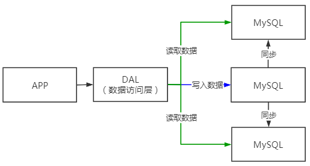
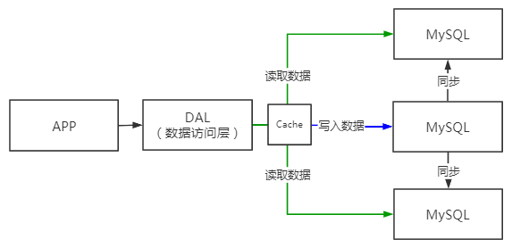
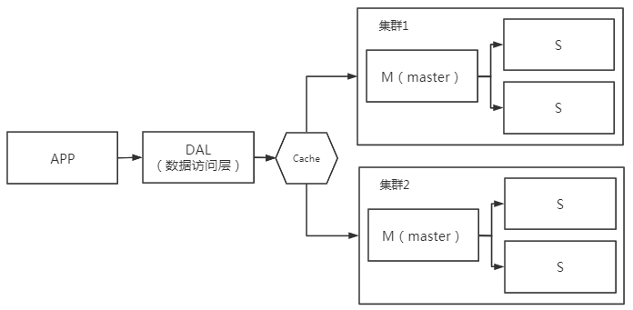
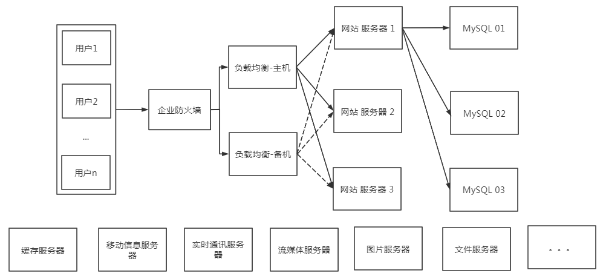
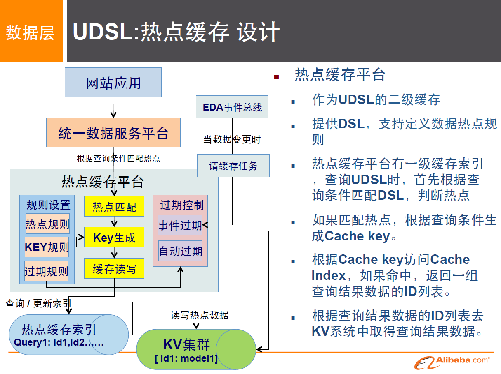
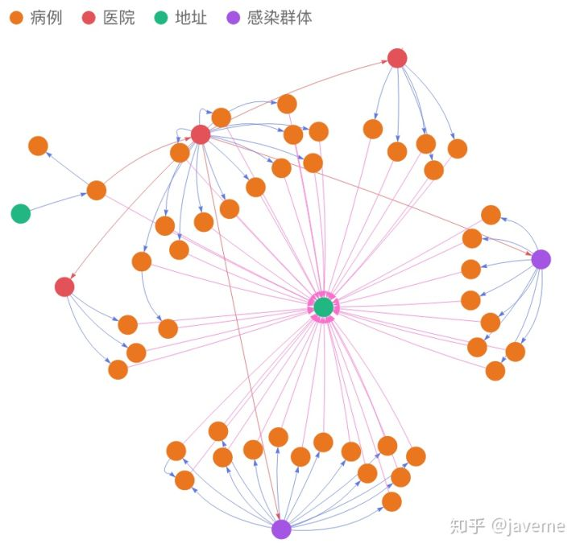

说明
1. Nosql发展
数据库发展
1、单机MySQL的年代
APP -> DAL -> MySQL
该年代网站访问量一般不会太大，单个数据库完全足够
更多的使用静态页面html，服务器根本没有太大的压力
此时，整个网站的瓶颈：
- 数据量如果太大，一台机器放不下
- 数据的索引（B+ Tree）
- 访问量（读写混合），一个服务器承受不了~
2、缓存Memcached + MySQL + 垂直拆分
读写分离：

网站80%的情况都是在读取数据，若每次都去查询数据库的话就十分的麻烦
此时可以使用缓存技术：
如：用户1查询1号商品，用户2也来查询1号商品，若两次请求均查询数据库，则造成了资源的浪费，此时可以在用户1查询1号商品时将1号商品放入缓存中，再有用户查询1号商品时直接从缓存中获取数据即可，保证了效率

3、分库分表 + 水平拆分 + MySQL集群
在各个集群中各存放一部分数据，加起来就是完整的数据，通过集群的一些机制就可以找到对应的数据的位置

4、目前
我们处于大数据时代；
大数据即一般的数据库无法进行分析处理了！
MySQL等关系型数据库就不够用了！数据量大，变化快
由此产生更多类型数据库
- 有的使用MySQL存储一些比较大的文件，如：博客、图片等！数据库表很大，效率就低了，如果有一种数据库专门处理这种数据。Mysql的压力就变得十分小了。
- 大数据的IO压力下，表几乎无法更改，即，若表中有上亿条数据，此时若要加一列是十分困难的
目前一个基本的互联网项目
此时有一组用户需要访问数据库

为什么要用nosql
用户的个人信息、社交网络、地理位置、用户自己产生的数据、用户日志等等爆发式增长！
这时候我们就需要使用NoSQL数据库，NoSQL可以很好的处理以上的情况
2. Nosql
2.1 说明
NoSQL = Not Only SQL （不仅仅是SQL）
泛指非关系型数据库，传统的关系型数据很难搞定web2.0时代，尤其是超大规模的高并发的社区
关系型数据库：使用表、行、列 来做数据存储
很多数据类型：用户的个人信息、社交网络、地理位置等，这些数据类型的存储不需要一个固定的格式，不需要多余的操作就可以横向扩展
可类比Map<String, Object> 使用键值对来控制
2.2 NoSQL特点
- 方便扩展（数据之间没有关系，很好扩展）
- 大数据量高性能（Redis一秒可以写8万次，读取11万次，NoSQL的缓存为记录级，是一种细粒度的缓存，性能会比较高）
- 数据类型是多样型的（不需要事先设计数据库，随取随用，如果是数据量十分大的表很多人就无法设计了）
- 传统的RDBMS和NoSQL
1 | 传统的RDBMS |
真正在公司中的时间：NoSQL + RDBMS 一起使用才是最强的
了解：3V + 3高
大数据时代的3V：主要是描述问题的
- 海量Volume
- 多样Variety
- 实时Velocity
大数据时代的3高：主要是对程序的要求
- 高并发
- 高可扩（随时可以水平拆分，机器不够了，可以扩展机器来解决）
- 高性能（保证用户体验和性能）
3. 阿里巴巴的演进分析
3.1 阿里巴巴发展史
阿里巴巴中随便一个商品，都有着图片介绍、视频介绍、价格、颜色、详细信息、评价等，这么多的东西难道都是在一个数据库中吗
3.2 各种应用的技术：
1 | # 1. 商品的基本信息 |
3.3 大型互联网应用问题：
- 数据类型太多了
- 数据源繁多，经常重构
- 数据要改造涉及大面积的改动
3.4 解决问题方式

详见 阿里巴巴中文站架构设计实践
NoSQL的四大分类
1. 四大分类
1. KV（key-value键值对）：
- 新浪：Redis
- 美团：Redis + Tair
- 阿里、百度：Redis + Memcache
2. 文档型数据库（bson格式（和json一样））
- MongoDB
- 一个基于分布式文件存储的数据库，主要用来处理大量的文档
- MongoDB是一个介于关系型数据库和非关系型数据库中间的产品，MongoDB是非关系型数据库中最像关系型数据库的
- ConthDB
3. 列存储数据库
- HBase
- 分布式文件系统
4. 图关系数据库 说明：https://zhuanlan.zhihu.com/p/112704484
图数据库(Graph Database)是一种以图结构进行存储和查询的数据库。图数据库的关键概念是点（代表实体）和边（代表关系），通过边将顶点连接在一起，从而进行快速的图检索操作。

Neo4j、InfoGrid
2. 四大分类分析
| 分类 | Examples举例 | 典型应用场景 | 数据模型 | 优点 | 缺点 |
|---|---|---|---|---|---|
| 键值（key-value） | Tokyo Cabinet/Tyrant, Redis, Voldemort, Oracle BDB | 内容缓存，主要用于处理大量数据的高访问负载，也用于一些日志系统等等。 | Key 指向 Value 的键值对，通常用hash table来实现 | 查找速度快 | 数据无结构化，通常只被当作字符串或者二进制数据 |
| 列存储数据库 | Cassandra, HBase, Riak | 分布式的文件系统 | 以列簇式存储，将同一列数据存在一起 | 查找速度快，可扩展性强，更容易进行分布式扩展 | 功能相对局限 |
| 文档型数据库 | CouchDB, MongoDb | Web应用（与Key-Value类似，Value是结构化的，不同的是数据库能够了解Value的内容） | Key-Value对应的键值对，Value为结构化数据 | 数据结构要求不严格，表结构可变，不需要像关系型数据库一样需要预先定义表结构 | 查询性能不高，而且缺乏统一的查询语法。 |
| 图形(Graph)数据库 | Neo4J, InfoGrid, Infinite Graph | 社交网络，推荐系统等。专注于构建关系图谱 | 图结构 | 利用图结构相关算法。比如最短路径寻址，N度关系查找等 | 很多时候需要对整个图做计算才能得出需要的信息，而且这种结构不太好做分布式的集群方案。 |